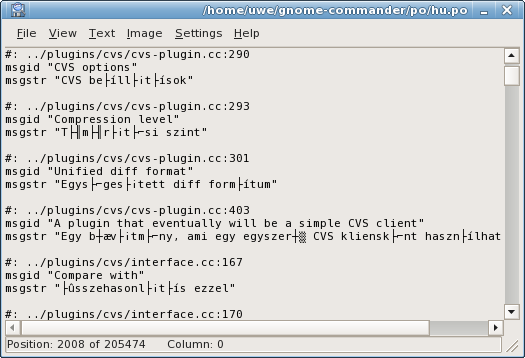
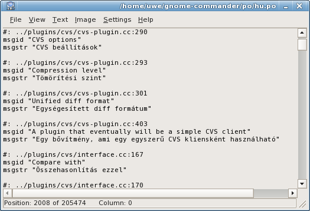
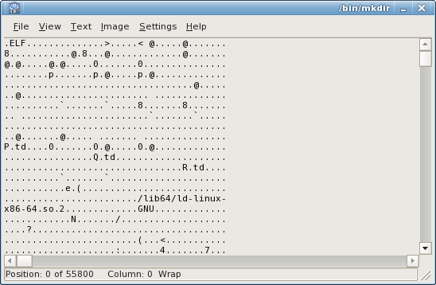

GNOME Commander
A powerful file manager for the Gnome desktop environment


Documentation: Internal file viewer
Main features include:
- Two input modes:
- ASCII, with several codepage encodings (including Codepage 437)
- UTF-8
- Five display modes:
- Fixed width text display, with or without line wrapping.
- Variable width text display, with or without line wrapping.
- Binary file display.
- Hex dump.
- Image rendering.
- Fast file loading (using MMAP or incremented loading when possible, just like Midnight Commander's internal viewer
- Planned Features:
- Text, Hex Search
- Text Marking, Copying to Clipboard
- More input modes: unicode, html.
- and more...
Internal Viewer's Window

- The current file name is displayed in the window's title.
- The file size (in bytes), and the current offset are displayed on the status bar
- The current offset (both as bytes and as percentage) is relative to the first byte displayed on the first line
- Use arrow keys to navigate the file.
- Home, End, Page-Up, Page-Down and Mouse Wheel scrolling are also supported
Using the internal viewer
| Menu Item | Keyboard Shortcut | Details |
|---|---|---|
| File|Close | Escape, or CTRL-W |
Close the internal viewer window |
| View|Wrap Lines | W | Toggles line wrapping. (Applicable only in text display modes) |
| Input Modes: | ||
| View|ASCII | A | Sets ASCII input mode. When in ASCII mode, you can also set the desired character encoding from the "View|Character Encoding" submenu. |
| View|UTF-8 | U | Sets UTF-8 input mode. |
| View|Character Encodings | This menu contains all possible character encodings. (If you need an additional encoding, send an email to the developers). |
|
| View|Character Encodings|ASCII | A | Presing "A" will quickly set ASCII input mode, without any further character encodings. |
| View|Character Encodings|Terminal Font | Q | Presing "Q" will quickly set ASCII input mode, with Codepage 437 encoding. (Good for binary and hex mode viewing) |
| Display modes: | ||
| View|Text - Fixed Width | 1 | Sets display mode to TEXT, with fixed width font. |
| View|Text - Variable Width | 2 | Sets display mode to TEXT, with variable width font. |
| View|Binary | 3 | Sets display mode to Binary. Switching to Binary display mode will automatically set ASCII input mode (UTF-8 is not supported with binary display) |
| View|Hex | 4 | Sets display mode to hex dump. Switching to Hex display mode will automatically set ASCII input mode (UTF-8 is not supported with hex dump display) |
| View|Image | 5 | Will try to load the file as an image. Loading is done using GDK, so every GDK-supported format should work. |
| Font Size: | ||
| View|Larger Font | = | Increment the font size. |
| View|Smaller Font | - | Decrement the font size. |
| Image Manipulation: | ||
| Image|Rotate Clockwise | CTRL+R | Rotate the image 90 degress. (Applicable only in IMAGE display mode) |
| Image|Rotate Counter Clockwise | Rotate the image 270 degress. (Applicable only in IMAGE display mode) |
|
| Image|Rotate 180 | CTRL+SHIFT+R | Rotate the image 180 degress. (Applicable only in IMAGE display mode) |
| Image|Flip Vertically | Vertically Flip the image. (Applicable only in IMAGE display mode) |
|
| Image|Flip Horizontally | Horizontally Flip the image. (Applicable only in IMAGE display mode) |
|
| Settings: | ||
| Settings|Binary Mode | Set number of bytes to display on each line in Binary display mode. | |
| Settings|Hex Mode|Decimal Offset Display | Display the offset in hexadecimal or decimal numbers. (Only applicable in Hex display mode). |
|
| Settings|Save as Default Settings | CTRL+S | Saves the current window size, input mode, and other settings as the default. (Note: the starting Display mode is determined by the file's content, and is not saved as a user setting) |
Input Modes
Here's an example of using different input modes.
The displayed file is a UTF-8 file (this is actually the Hungarian translation file from the gnome-commander project).
UTF-8 is an encoding scheme used to encode Unicode characters into a multibyte string. A single UTF-8 character can be composed from up to 6 bytes.
In ASCII mode (without any further chacarater encodings, press "CTRL+A" to set it), only bytes with ASCII value above 0x20 and below 0x7F are displayed. All other characters are shown as dots:

In ASCII mode with Codepage 437 encoding (press "CTRL+Q" to set it), extended ASCII characters (above ASCII 0x7E) are displayed.
In UTF-8 Input mode (Press "U" to set it), the correct characters are displayed.
Text Display Mode
In Text mode, you can set the input mode to either ASCII or UTF-8.
You can set line wrapping by pressing "W".
Text with Fixed width font display (Press "1" to set it) is suitible for viewing source files:
Text with Variable width font display (Press "2" to set it) is suitible for viewing text files:

Binary Display Mode
Binary display mode is suitible for quickly viewing binary files (If that sort of thing is you bag...). In Binary display mode, you can only use ASCII input mode, with or without additional character encodings (but not UTF-8). Number of bytes displayed on each line can be changed in the "Settings" menu.
Viewing a file in Binary display mode, in ASCII input mode:
The same file as above, with Codepage 437 encoding:

Hex dump Display Mode
This is a simple Hex dump display mode (similar to using od -t x1). In Hex dump display mode,
you can only use ASCII input mode, with or without additional character encodings (but not UTF-8).
Below is a short demonstration of the Hex dump display mode. The file displayed is 256 bytes in size, each byte corresponds to a different ASCII value.
ASCII Encoding:

Codepage 437 Encoding:

Cyrillic Encoding:

Image Display Mode
The viewer starts with the image fitted to the viewer window size = larger window = larger view